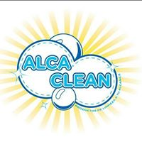
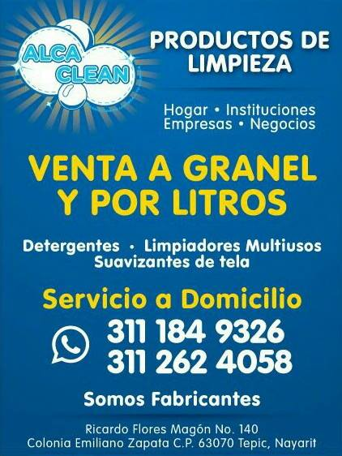

.
Mónica Eugenia Camarillo Gomez. 14 de abril de 2020
ALCA CLEAN 
ALCA CLEAN es una empresa mexicana que produce y comercializa artículos de liempieza, para el hogar, oficinas, hospitales, escuelas, etc. "Con la mejor calidad y al mejor precio"
Contamos con servicio a domicilio
Dirección postal
Av. Ricardo Flores Magón #140, Col. Emiliano Zapata. Entre Hidalgo y Zapata. Cp. 63070. Tepic, Nay. México.
Número de Teléfono
(+52)3112624058
(+52)3113424791
Correo Electrónico
alcaclean@hotmail.com
Horario
Lun-Vie:09:00-14:00
lun-Vie:16:30-19:00
Sáb:09:00-15:00

"PRODUCTOS" PRODUCTOS DE LIMPIEZA LÍQUIDOS
Cloro
Descripción Cloro
Cloro en gel 70%
Descripción Alcohol en gel
Hipoclorito
Descripción Hipoclorito
Jabón líquido para trastes
Descripción Jabón Trastes
Jabón líquido para ropa de color
Jabón líquido para ropa delicada zote
Jabón líquido para manos (diferentes aromas):
Multiusos diversos aromas:
Pinol en gel
"Descripción de Pinol en gel"
Suavizantes de tela con diversos aromas:
Aromatizantes líquidos diversos aromas:
SarriGel
"SarriGel"
Almorol Líquido
Citronela
GERCERIA
Trapeador jumbo 800 gr pabilo
Trapeador mega pabilo peñalero 2 pulgadas de 1 kg (ideal para colegios, hospitales o fábricas)
Trapeador rayón 150 gr
Trapeador pabilo mediano de 300 gr
Trapeador pabilo grande 600 gr
Trapeador de microfibra
Trapeador de microtela de 170 gr
Trapeador hilo color 300 gr
Trapeador hilo blanco 300 gr
Escoba 6 hilos
Escoba abanico corta
Escoba abanico larga
Escoba veneciana
Cepillos
Pinzas para ropa de 24 y 36 pzas
Atomizador industrial de 1 lt
Atomizador 1/4 lt
Atomizador 1/2 lt
Atomizador 1 lt
Escopeta de raíz
Tela miltex paquete de 5 pzas
Tela miroslava, paquete con 3 pzas
Tela miroslava 1 paz con microfibra
Paquete de ganchos para ropa
Fibra para platos negros
Fibra para platos verdes
Fibra para platos
amarillos con verde
Recogedor miltex
Recogedor con rehaces
Recogedor perico